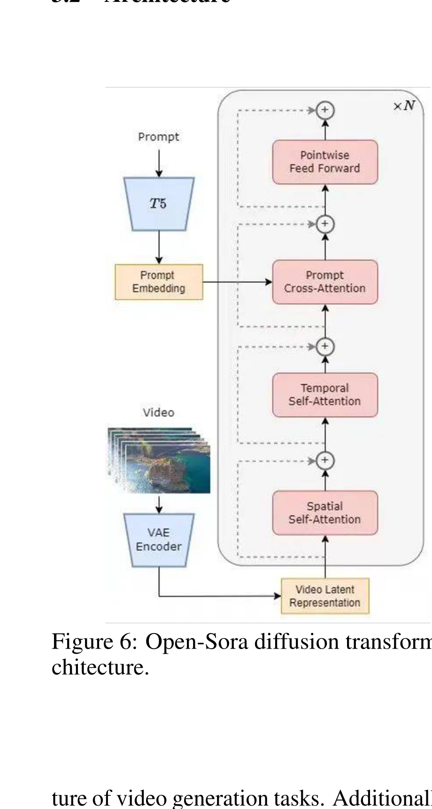

Open-Sora: Democratizing Efficient Video Production for All
Zangwei Zheng 等 · arXiv 技术报告 · 2024 · arXiv:2412.20404 · Zotero 2PFYQMHG
这是一篇 arXiv 项目技术报告，不是截图暗示的“标准会议论文”。它的价值在于公开数据处理、3D VAE、STDiT、训练代码、权重和多阶段训练经验，目标是让完整视频生成系统可复现。
§1 Introduction：Open-Sora 为什么首先是一套开放生产系统
Sora 展示了 scaling video generation 的潜力，却没有公开数据、训练代码和权重。研究社区不仅缺一个模型，还缺从数据下载、过滤、caption、VAE 压缩、DiT 训练到推理优化的完整可复现路径。高质量视频数据巨大、比例与时长多变，3D VAE 和时空 attention 又让训练成本远高于图像模型。
Open-Sora 因此以开放系统为交付：HD-VG 数据处理流程、时空压缩 3D VAE、Spatial-Temporal DiT（STDiT）、多条件 mask、分阶段训练代码与模型权重。STDiT 把每帧空间 attention 与同位置时间 attention 解耦，3D VAE 从 SDXL 2D VAE 冷启动并逐步学时间压缩，从而降低从图像生态迁移到视频的成本。
展开原文 · 项目承诺
“all the training/inference/data ... made available to the community”
§2 Related Work：从 latent video diffusion 到时空 DiT
Video Diffusion Models 将图像 diffusion 扩到时间，早期常用 3D U-Net；Latent Diffusion 通过 VAE 把像素计算移到 latent；DiT 用 Transformer 取代 U-Net，便于随数据和参数扩展。视频 Transformer 若全时空 attention 成本过高，因此许多工作分解 spatial/temporal attention 或采用 patch/token 压缩。
Open-Sora 承接 Sora 的 patchified latent/DiT 思路，但给出可训练实现：STDiT 分解时空计算，随机条件 mask 统一 T2V、I2V 与补全，训练从图像/短视频/低分辨率逐级走向长视频。对 WAM，这些模块是生成底座；它们本身不包含动作、机器人状态或可执行性约束。
§3 它交付的不只是一个模型
§4 3D VAE：从图像模型冷启动视频模型
先用 SDXL 的 2D VAE 权重初始化；再训练包含 3D causal convolution 的视频 VAE；最后用混合视频长度直接重建真实视频。这样利用图像空间先验，避免从零训练大规模视频压缩器。
| Stage 1 | 以 2D VAE 为教师，用 identity loss 对齐 3D VAE 特征。 |
| Stage 2 | 移除 identity loss，强化时间理解。 |
| Stage 3 | 混合长度（最高 34 帧）直接视频重建，修复非标准长度模糊问题。 |
§5 STDiT：先看每帧，再看同一位置的时间

1. 输入视频 latent token
由 3D VAE 编码，保留帧与空间网格索引。
2. 帧内空间 attention
先处理构图、物体关系和纹理结构。
3. 跨帧时间 attention
同一位置沿时间交互，减少完整时空注意力的二次复杂度。
4. 文本 cross-attention
将语义条件与当前时空特征对齐，再进入 FFN。
§6 随机遮罩：一套模型兼容多种视频条件
训练时随机保留首帧、末帧、首/末若干帧或任意帧，其余位置加噪。模型因此可以执行 image-to-video、video continuation、插帧、下一帧预测和局部编辑，而不必为每个任务单独建模。
- $M=1$
- 已知条件帧保持干净，等价于 timestep 0。
- $M=0$
- 待生成区域处于噪声时间 $t$。
- 随机 mask 分布
- 决定模型见过哪些条件组合，也是泛化到视频编辑任务的关键。
§7 从图像 DiT 逐步适配到视频 Flow
| 初始化 | 从 PixArt-Σ 2K 图像生成 checkpoint 开始。 |
| 稳定性 | 加入 QK-normalization、小 epsilon 与 RoPE 时间位置编码。 |
| 目标迁移 | 从离散 DDPM 过渡到 continuous-time rectified flow。 |
| 分桶 | 按分辨率、宽高比和帧数放进固定 bucket，兼顾动态尺寸与高效 kernel。 |
| 成本披露 | 报告约 68k steps、约 35,000 H100 GPU hours。 |
§8 证据与局限
§9 对 WAM 的意义
统一 mask 条件、图像权重冷启动、动态尺寸分桶和 flow 训练，都是动作条件世界模型的数据与训练模板。WAM 可以把“已知帧 mask”扩展为历史观测，把文本条件扩展为任务与动作序列。
Open-Sora 的多任务条件生成仍以视觉 plausibility 为主。机器人世界模型需要 intervention test：动作改变是否导致正确的接触、位姿与状态转移，而不是只产生视觉上顺滑的变化。
§10 实验归因与复现：开放不等于训练配置可以省略
最小可信复现清单
- 冻结数据快照、过滤器、caption 模型、去重与采样权重。
- 报告 2D/3D VAE 的空间—时间压缩、重建指标与训练步骤。
- 明确 STDiT block、patch、位置编码、序列并行与 mixed precision。
- 逐阶段给出分辨率、帧数、batch、优化器、学习率和 GPU 小时。
- 对 WAM 迁移另测动作条件、物理一致、推理延迟与闭环控制。
Open-Sora 的核心贡献是把视频 DiT 的数据—压缩—架构—训练全链路公开；它是 WAM 的生成基础设施，不是现成机器人世界模型。